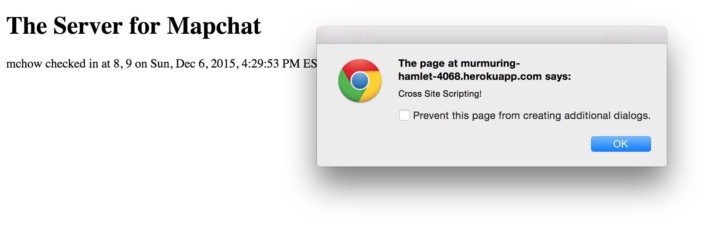
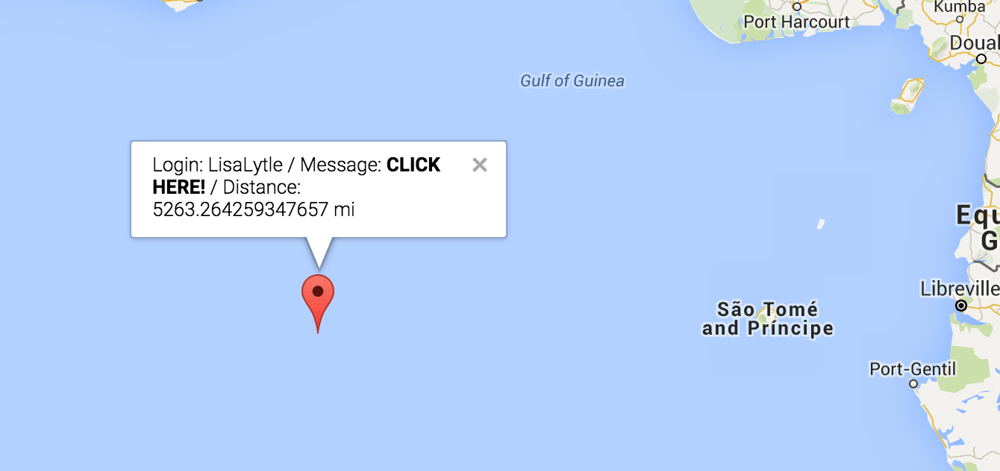
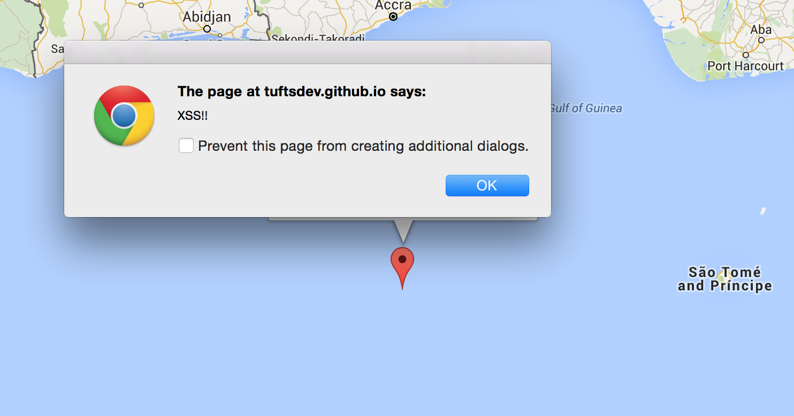
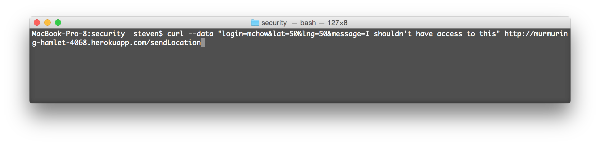
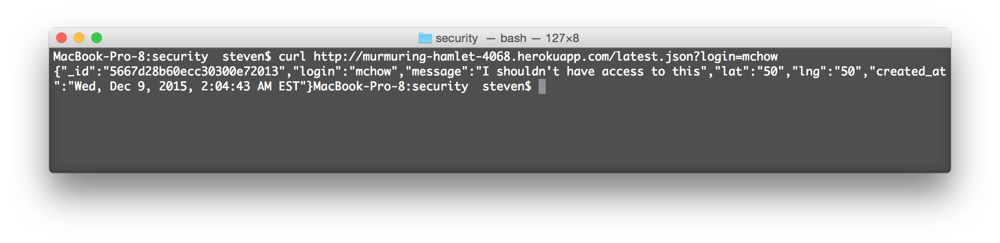

Security Assesment of Assignment 3 Mapchat Server
Created by: Steven Manwaring
December 8, 2015
Introduction
This page outlines the results of the security risk assessment I conducted on my partner's web application from Comp 20 Assignment 3. This application works as the server for the mapchat site that was created in Assignment 2. The application has a Post API which allows submission of specific data, and returns all documents from the Mongo database associated with the application. There is also a Get API that returns the latest data for a given login. However, this application contains some security vulnerabilities. On this page I will describe the various security issues I discovered in my partner's application and suggest ways in which these vulnerabilities might be avoided.
Methodology
I began my testing using the "black box" method. I used Postman and cURL for this portion of the assignment. I then examined my partner's code to find additional areas where security risks might exist, and further targeted those areas specifically to discover if they contained vulnerabilities.
Abstract of Findings
Overall, my partner's application is actually pretty secure. The application does a good job of validating logins, so that I was unable to find any security vulnerabilities with the /latest.json Get API. Neither cross site scripting nor sql injection worked here. The application also does an excellent job of ensuring that 'lat' and 'lng' are floats, thus preventing injection of JavaScript code in these fields. As a result, the only area where cross site scripting was possible was in the 'message' field of the /sendLocation Post API.
Issues found
Cross Site Scripting
- Affects POST /sendLocation
- Severity: HIGH Anyone can submit javascript code as their "message" because user input is not sanitized. The application checks if the message is null, but no further validation is performed. Furthermore, any malicious changes made to the page though cross site scripting are persistent (they are stored in the database), visible to all users of the application, and may adversely affect their usage of the website.
- I found this security vulnerability during the "black box" phase of my testing. Using Postman to post to the server, I sent a short script that sets an alert box to display anytime a user visits the application site. However, this particular script does not directly affect my partner's mapchap site.

- I was, however, able to conduct a different XSS attack that did affect my partner's mapchat site (as well as their assignment 3 site), by sending
onmouseover=alert('XSS!!')CLICK HERE! in the "message" field. Thus, when a user clicks on this entry on the map, a malicious alert pops up.


- These vulnerabilities could be resolved by escaping certain characters in user input. Characters such as the 'greater than' and 'less than' symbols are especially important to deal with, as doing so would have prevented the attack I was able to conduct with relative ease. This could also be accomplished using the sanitize functions in the npm Validator package.
Cross Origin Resource Sharing Wildcard ('*')
- Affects POST and GET API's
- Severity: MEDIUM This is an insecure method, in that it allows any user from any domain to make an XMLHttp Post Request and submit data to the database, provided they have an accurate login. Likewise, any user from any domain that happens to have an accurate login can use the Get method to retrieve data. For example, using Postman or cURL, I was able to make Get and Post requests from my computer without having any afiliation with the mapchat/tuftsdev.github.io domain.
HTTP Post from any domain:

HTTP Get from any domain (the post request went through!):

- While the data in this particular application is not especially private, as good programming practice, cross origin resource sharing should really be limited to a specific domain. In this case, for both the Get and Post methods, cross origin resource sharing should be limited to the mapchat Github pages domain. This can be easily fixed by modifying the response headers to only accept data from a specific domain. I discovered this problem during my "black box" testing, and confirmed it by examining my partner's code.
Conclusion
This appliction does not pose too many security threats. Most areas where I expected to find cross site scripting or query injection threats turned out not to be problematic. The one area that needs immediate attention is the "message" field in the Post API. Unless input data is sanitized here, code far more malicious that what I attempted can continue to be injected by anyone with ease. Additionally, I would recommend using a professional web security scanning tool to find any vulnerabilities that I may have missed.